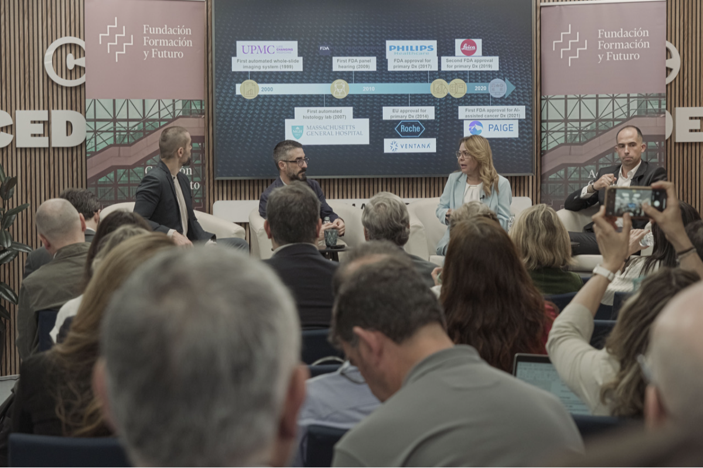
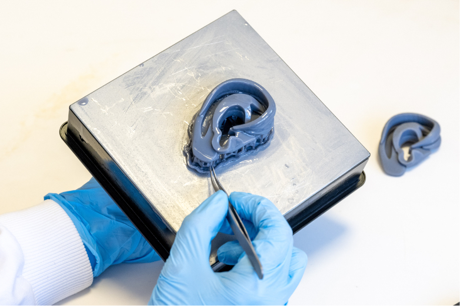

Área de la Salud
Telemedicina "Una consulta medica diferente"
Según el Informe "The future Unmasked. Predicting the future of healthcare and life sciences in 2025", la industria de la telemedicina a nivel mundial experimentará un crecimiento del 19,3% hasta 2025, además de un auge del mercado global de diagnóstico de un 15,5% hasta 2030. Por otra parte, el gasto anual en el mercado mundial de la atención geriátrica (atención domiciliaria, monitorización remota de pacientes, etc.) se prevé que supere los 1,4 billones de dólares al final de este 2023. Asimismo, el tamaño del mercado mundial de Tecnologías de la Información de la Salud alcanzará los 270,3 mil millones de dólares en el presente año, partiendo de los 227,5 mil millones de dólares en 2020.Sin duda, una verdadera transformación con la tecnología en la medicina como eje vertebrador que, además, conllevará importantes beneficios:
Según los resultados del estudio, 45% de los médicos dijeron dar consultas virtuales; la psiquiatría es la especialidad que está en el primer lugar con 94%.[1] La mayoría de los profesionales que emplean este tipo de consultas registra de 1 a 5 sesiones virtuales por semana. El porcentaje de médicos que utiliza la teleconsulta es mayor en el sector privado o con práctica mixta (es decir, pública y privada: 47%), mientras que entre los profesionales que trabajan exclusivamente en el sector público solamente 19% recurre a esta modalidad remota.
VENTAJAS:

El estudio reporta también que los servicios de mensajería instantánea (WhatsApp, Telegram o Messenger) registran el mayor uso por parte de los profesionales de la salud (79%), mientras que la llamada telefónica alcanza 67%
Apple Watch salva la vida de dos hombres antes de que un médico supiera sus problemas de salud. "El dispositivo recolectó información y alerta de fallos en su ritmo cardíaco"
Dos vidas se han salvado gracias a la tecnología. Frank Haggerty y Luke Heyman son dos usuarios de Apple Watch, que pudieron evitar el final de su vida al aprovechar una de las funciones del reloj inteligente.Él es un residente de Lawerenceville, New Jersey, y a sus 73 años decidió comprar un Apple Watch porque le parecía “cool”. Pero lo que comenzó como un simple deseo estético, terminó convirtiendose en la inversión más importante de su vida.
Una noche, mientras Frank y su esposa dormían, su Apple Watch emitió una alarma inusual. Una notificación indicaba que su ritmo cardíaco estaba peligrosamente bajo, apenas 30 pulsaciones por minuto, muy por debajo del rango normal.
El fue rápidamente trasladado al hospital, donde los médicos descubrieron que sufría de un bloqueo cardíaco. Gracias a la pronta intervención, recibió un marcapasos que le ayudaría a regular su ritmo cardíaco y potencialmente salvar su vida.
“Francamente, si no tuviera el reloj, no estaría sentado aquí hoy. Es mi mejor amigo, eso digo enfrente de mi mujer”, afirmó Frank, agradecido por la intervención oportuna de su Apple Watch.

El preciso robot cirujano de Sony que quiere cambiar las operaciones: muy compacto y realiza suturas microscópicas
La empresa de televisores y cámaras ha presentado el que sería el primer robot cirujano teledirigido capaz de intercambiar de forma autónoma y rápida sus instrumentos y operar en microcirugía. El prototipo se dio a conocer durante la Conferencia Internacional sobre Robótica y Automatización del Instituto de Ingenieros Eléctricos y Electrónicos (IEEE) que se celebró el pasado 13 de mayo en la ciudad de Yokohama.
Presicion Milimetrica
Las herramientas de este robot se manejan en un terreno extremadamente delicado, el campo de la supermicrocirugía. En estas operaciones se pueden tratar vasos sanguíneos y nervios muy pequeños, con un diámetro por debajo de un milímetro. La precisión es imprescindible en esta técnica, siendo necesario el uso de microscopios para poder ver con claridad la zona que se está operando.
Con estas cualidades, por muy diestros que sean los cirujanos, la robótica asistencial ha encontrado un terreno ideal en el que centrar sus esfuerzos. Como este nuevo robot de Sony, equipado con dos brazos y sistema de visión que se controla de forma manual.
No se trata de un robot impulsado por IA, sino de una máquina que se convierte en una extensión de los brazos del médico. "Las operaciones remotas que sufren latencia o movimientos del robot diferentes a los de mi mano dan una impresión negativa", explica la Dr. Makoto Mihara. "Sin embargo, este robot se mueve como yo quiero; el robot hace los mismos movimientos que mis dedos" explica esta especialista en el vídeo promocional de Sony.
El cirujano observa la zona a operar a través de unos anteojos, como si mirara por el microscopio y maneja unos controles parecidos a un bolígrafo. Estos extremos están diseñados, como se puede ver en la imagen inferior, para permitir pinchar las herramientas con los dedos y detectar el nivel de presión. El vídeo de Sony demuestra la destreza de esta maquinaría a la hora de cortar y coser la fina piel de una semilla de maíz en una mazorca
IA es mas que realidad en la Medicina
Éxito de la sesión científica organizada por la Fundación Formación y Futuro, con participación de destacados expertos del ámbito clínico y reputados técnicos en IA. Los expertos recalcan la necesidad de que el acceso a los datos sea seguro, eficaz y operativo, ofreciendo al sanitario herramientas factibles que eviten los sesgos en los algoritmos.
Las soluciones digitales y tecnológicas en salud, que ya alcanzaron un avance notable hace dos décadas, tienen hoy día su máximo exponente en los usos de la inteligencia artificial (IA), que ya ofrece resultados concretos, en especial en la explotación de los datos clínicos para su transformación en algoritmos que coadyuvan a mejorar la eficacia de los profesionales sanitarios. Sin embargo, subsisten déficits y limitaciones por superar, como es la aplicación generalizada, accesible y equitativa de estos avances, la imposición de criterios de coste-efectividad y la carencia de regulación al efecto.
Así se ha puesto de relieve en una jornada organizada por la Fundación Formación y Futuro, con el apoyo de la compañía Diagnostic Data Hub, donde se ha discutido sobre el uso de biomarcadores y el impacto de la inteligencia artificial en la medicina de precisión. "Resulta imprescindible hablar de IA y salud como realidad, pues ya hay evidencia científica suficiente que se puede compartir y, con un intercambio de experiencias entre médicos y técnicos que hará posible su progresiva implantación, al margen de los problemas derivados a la legislación al respecto", según ha indicado Jaime del Barrio, presidente de la Asociación Salud Digital y moderador de la sesión.
En palabras de Jesús García-Foncillas, director del departamento de Oncología de la Fundación Jiménez-Díaz (Madrid), "la utilización de la inteligencia artificial para el diagnóstico precoz del cáncer tiene pleno sentido". Y, en base a casos reales de cáncer de mama, pulmón o piel, se ha observado que el sistema experto aplicado basado en IA consigue mayor sensibilidad diagnóstica y de diagnóstico diferencial que el especialista.
En el caso concreto del diagnóstico precoz del cáncer, el experto de la Fundación Jiménez Díaz ha detallado en este foro experiencias positivas en la interpretación del test de Papanicolau en cáncer de cérvix o mejorías sensibles de la colonoscopia, aumentando la capacidad de detección temprana del cáncer de colon. Tal y como reconoce el Dr. García-Foncillas, "la IA como herramienta diagnóstica reviste un valor indiscutible para la clínica diaria, pero debe contar con una doble concienciación por parte de los profesionales: una previa, de promoción del diagnóstico precoz, y otra posterior, que favorezca el acceso eficaz de los pacientes a los tratamientos adecuados".
Bioimpresión 3D, ¿la próxima revolución en la medicina?
Utilizada para crear prótesis personalizadas, implantes y modelos anatómicos precisos para la planificación quirúrgica. Desarrollo de tejidos y órganos artificiales para trasplantes.
La bioimpresión en 3D es el empleo de tecnología de impresión 3D para fabricar tejidos biológicos funcionales mediante la controlada disposición, capa a capa, siguiendo un preciso patrón tridimensional de biogeles integrados por distintos tipos de células, (bio)polímeros estructurales, y factores de crecimiento y otras biomoléculas. Pero la bioimpresión 3D es mucho más que eso. Es ciencia ficción (a punto de ser) materializada.
Un corazon sintetico
Una de las aplicaciones más inmediatas tanto que, de hecho, ya se está practicando y con mayor potencial es la bioimpresión de miniórganos y tejidos. Se trata de unidades funcionales miniaturizadas impresas en el interior de celdillas rellenas de un fluido que recrea las condiciones que se dan en el interior del organismo. Un procedimiento que permite imprimir colecciones de estos minitejidos en un mismo soporte para profundizar en el estudio de patologías, y para testar medicamentos y tratamientos de un modo mucho más rápido e inmediato que los ensayos clínicos tradicionales. En esta línea de actuación, un grupo multidisciplinar de investigadores de la Universidad de Boston ha creado una réplica en miniatura de un ventrículo humano una de las cuatro cámaras que integran el corazón, y la más implicada en el bombeo de la sangre con capacidad para latir, mediante la bioimpresión de un armazón acrílico lo suficientemente rígido, y a la vez flexible, para sostener las capas de células cardiacas vivas depositadas sobre él, y soportar el latido cardíaco que generan. El miniPUMP, tal y como fue bautizado, ocupa una superficie de apenas 3cm2, poco más que un sello postal, y está comenzando a ser empleado para estudiar cómo crece y se desarrolla el corazón en el embrión; como le afectan diferentes patologías y, sobre todo, como sujeto de ensayo para estudiar la efectividad y efectos adversos de potenciales nuevos tratamientos.

Orejas de Remplazo
En la misma línea, otros órganos y tejidos que en la actualidad ya son viables son los tejidos cartilaginosos externos como la nariz y las orejas, atendiendo a su escasa vascularización y a la facilidad de ensamblarlo al organismo al ubicarse “fuera” del cuerpo. De hecho, en junio de 2022 se realizó el primer trasplante de una oreja bioimpresa en una mujer de 20 años afectada de microtia un problema congénito que provoca que el pabellón auditivo apenas se desarrolle lo que merma la capacidad de audición. La oreja fue creada a partir de una muestra de condrocitos las células responsables de la formación del cartílago—tomada de la paciente, que fueron cultivadas para conseguir su replicación y disponer así del material de partida para la impresión del tejido. A continuación, fue implantado bajo la piel, donde se completó la regeneración del cartílago con la formación de un puente entre el implante y el tejido original.
